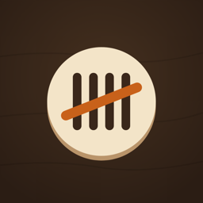

Как вести Мафию спокойная памятка для ведущего
Сегодня ведёте вы — может, впервые, а может, давно не вели, и порядок ночи подзабылся. Ниже всё по порядку, в каком понадобится: сколько мафии раздать на ваш стол, что происходит в первую ночь, кто когда просыпается, как идёт дневное голосование, что делать при ничьей и когда игра заканчивается.
Сколько каких ролей?
Посчитайте игроков, которые получат роли. Ведущий не играет, себя не считайте.

Score Night раздаёт роли, подсказывает, что сказать на каждом шаге, помнит, кто есть кто, и объявляет победителей.
- Работает без интернета, для 5–16 игроков плюс ведущий
- Две партии каждой игры — бесплатно, и во время игры никакой рекламы
Роли
Команд две. Мафия знает своих; мирные не знают ничего и должны всё выяснить в разговоре. Каждый игрок получает одну роль, у ведущего роли нет.
Мирные
Ночью ничего не делают: спят с закрытыми глазами. Днём слушают, спорят и голосуют. Побеждают, когда выбыла вся мафия.
Мафия
Ночью вместе открывают глаза и молча выбирают жертву. Днём притворяются обычными мирными.
Дон
Глава мафии. Выбирает жертву вместе со всеми, а потом просыпается ещё раз и ищет комиссара: показывает на игрока, а ведущий кивает или качает головой.
Комиссар
Каждую ночь показывает на одного игрока, и если это мафия, ведущий кивает. Дон тоже считается мафией. Днём комиссар может осторожно рассказать, что узнал.
Доктор
Каждую ночь показывает на одного игрока, которого лечит. Если мафия выбрала того же человека, утром никто не выбывает.
Перед игрой
- Рассадите всех в круг, вместе с ведущим. Так легче запомнить порядок: ночью люди показывают друг на друга, и проще уследить, когда знаешь, кто где сидит.
- Посчитайте игроков без ведущего и выберите роли. Нужно от 5 до 16 игроков. Помощник вверху показывает обычный состав: до 6 игроков — 1 мафия; от 7 до 9 — 2, и одна из них Дон; от 10 до 12 — 3; от 13 до 16 — 4. Комиссар есть всегда, доктор — с 6 игроков. Все остальные — мирные. Пример: 9 игроков — это Дон, ещё 1 мафия, комиссар, доктор и 5 мирных.
- Договоритесь о спорных правилах вслух, пока никто не взял карту: что бывает при ничьей, открывают ли роль выбывшего, может ли доктор лечить себя. За разными столами это решают по-разному, а спорить на 40-й минуте невесело. Наши правила по умолчанию — ниже, в правилах стола.
Раздача ролей
Каждый должен узнать свою роль так, чтобы её не видел никто другой. С бумажными картами перемешайте нужную колоду, раздайте каждому по карте рубашкой вверх, дайте всем посмотреть и спрятать. Ведущему нужно знать все роли, так что либо смотрите карты при раздаче, либо запишите роли, когда все посмотрели.
В Score Night телефон идёт по кругу: каждый проводит пальцем и держит, чтобы увидеть свою роль, отпускает, чтобы скрыть, и передаёт дальше. В конце телефон возвращается к ведущему, а он видит всех. Если компании привычнее свои карты, раздайте их, а роли просто впишите в приложение сами.
Первая ночь: знакомство мафии
Самая первая ночь короткая. Никто не выбывает: мафия просто узнаёт своих.
- Все закрывают глаза. Скажите классическую фразу или что-нибудь атмосфернее.«Последний трамвай уходит в депо. Город засыпает».
- Мафия открывает глаза и смотрит друг на друга. Дайте им несколько секунд запомнить лица. Без разговоров и рукопожатий.«Мафия, откройте глаза и обменяйтесь многозначительными взглядами. Запомните друг друга».
- Мафия закрывает глаза, город просыпается. В первое утро объявлять нечего, так что сразу начинается первый день обсуждения.
Полная ночь по порядку
Со второй ночи начинается полный круг. Роли просыпаются по очереди, молча показывают и засыпают, прежде чем вы позовёте следующую. Вы смотрите, запоминаете и отвечаете кивком или качаете головой.
- Город засыпает. Все закрывают глаза. Дождитесь тишины.
- Мафия просыпается и выбирает жертву. Открывают глаза, молча договариваются и показывают на одного игрока. Запомните, на кого, и отправьте мафию спать.«В задней комнате пахнет сигарами и заговором. Мафия, решайте — тихо, у стен есть уши».
- Дон ищет комиссара. Дон снова открывает глаза и показывает на одного игрока. Если это комиссар — кивните, если нет — покачайте головой. Своих Дону проверять незачем. Если Дон уже выбыл, пропустите этот шаг.
- Комиссар кого-то проверяет. Комиссар показывает на одного игрока. Кивните, если это мафия, покачайте головой, если нет. Дон здесь считается мафией, так что на Дона тоже кивок.
- Доктор кого-то лечит. Доктор показывает на одного игрока. Если мафия выбрала того же человека, жертва выживает. По нашим правилам доктор может вылечить себя один раз за игру и не может лечить одного и того же игрока две ночи подряд.«Доктор берёт чемоданчик и зонт — до рассвета будет дождь. Доктор, кого спасаем?»
Утро: что произошло ночью
Разбудите город и расскажите новости. Сначала про себя решите: если мафия выбрала того же, кого вылечил доктор, никто не выбыл. Иначе жертва выходит из игры.
Объявляйте только итог, никогда не причины. Если кто-то выбыл, назовите его. Если нет, просто скажите, что ночь прошла тихо, и не упоминайте ни доктора, ни того, кого спасли: это лишняя подсказка мафии.
По умолчанию роль игрока, выбывшего ночью, не открывают. Некоторые столы открывают; смотрите правила стола.
После утренних новостей проверьте, не закончилась ли игра (смотрите когда игра заканчивается). Если нет, начинается день.
День: обсуждение и голосование
- Обсуждение. Идите по кругу и дайте каждому высказаться по очереди. Таймер речи помогает держать темп; у нас — минута на человека. Здесь игроки делятся подозрениями и называют имена, а комиссар решает, сколько раскрыть.
- Голосование. Называйте кандидатов по очереди и спрашивайте, кто за то, чтобы его выгнать. Игроки поднимают руки, вы считаете. Кто набрал больше всех голосов, выбывает. Если голосов нет ни у кого, никто не выбывает.
- Последнее слово. Выгнанный игрок получает несколько секунд на последнее слово и выходит из круга. По умолчанию его роль не открывают.
- Проверьте, не закончилась ли игра, и если нет — город снова засыпает.
Ничья
Если больше всего голосов поровну у двух игроков или больше, по умолчанию мы переголосовываем только между ними. Если снова поровну, сегодня никто не выбывает, и город засыпает чуть более нервным.
Есть ещё два распространённых варианта: после второй ничьей выбывают все, у кого поровну, или переголосования нет вовсе, и при ничьей никто не уходит. Выберите вариант до начала игры, а не когда ничья уже случилась.
Когда игра заканчивается и кто побеждает
Проверяйте после каждого утра и каждого голосования:
- Мирные побеждают, как только выбыла вся мафия, включая Дона.
- Мафия побеждает, как только её столько же, сколько всех остальных, или больше. С этого момента город уже не может её переголосовать.
Когда игра закончилась, откройте все роли, а если хотят — расскажите, что было ночами: кто кого проверял и кого спас доктор. Часто это самая весёлая часть вечера.
Пример целой партии
7 игроков: Анна, Борис, Катя, Иван, Максим, Настя и Олег. Олег — Дон, Максим — мафия, Настя — комиссар, Катя — доктор, Анна, Борис и Иван — мирные. Правила стола по умолчанию.
- Ночь 1: Олег и Максим открывают глаза и видят друг друга. Никто не выбыл.
- День 1: никто пока ничего не знает, но Борис много говорит и набирает 4 голоса. Борис выбывает; он был мирным. Мафии 2, остальных 4.
- Ночь 2: мафия показывает на Катю. Дон проверяет Ивана: вы качаете головой. Комиссар проверяет Максима: вы киваете. Доктор лечит себя — так можно один раз за игру.
- Утро 2: мафия выбрала того, кого вылечил доктор, поэтому никто не выбыл.
- День 2: Настя осторожно наводит подозрения на Максима, и Максима выгоняют. Мафии 1, остальных 4.
- Ночь 3: Олег, оставшись один, показывает на Настю. Как Дон он проверяет Анну: вы качаете головой. Настя проверяет Олега: вы киваете. Катя уже лечила себя, поэтому лечит Ивана.
- Утро 3: Настя выбывает. Мафии 1, остальных 3: игра продолжается.
- День 3: у Олега и Анны по 2 голоса. Переголосование между ними: Олег 3, Анна 1. Олег выбывает.
Советы для ведущего
- Держите одно и то же лицо. Кивок — «да», покачивание — «нет», и всё с одинаково спокойным видом. Игроки следят за вами внимательнее, чем кажется.
- Давайте каждой роли одинаковое время. Если мафия выбрала за 2 секунды, а доктор думает 20, считайте про себя и выжидайте примерно одинаково для всех. Долгая пауза после одной роли и короткая после другой подскажут, кто ещё в игре.
- Никогда не подсказывайте, кто действовал. Не смотрите в сторону того, кто показывал, не говорите «хороший выбор», а утром объявляйте только итог.
- Говорите, пока люди двигаются. Короткая фраза из сюжета заглушит шорох, когда кто-то открывает глаза или поднимает руку.
- Шутите по-доброму. Шутите над ситуацией, а не над игроками: город, дождь, бармен, который ничего не видел. Никто не должен чувствовать себя лишним из-за того, что вылетел первым.
- Нагнетайте к финалу. Когда остаётся 4 игрока или меньше, скажите об этом перед ночью. Тут все садятся ровнее.
- Держите темп. Таймер речи и твёрдое «пора голосовать» спасут вечер от бесконечного спора.
Частые ошибки
- Называть утром, кого спас доктор. Просто скажите, что никто не выбыл.
- Качать головой комиссару, когда он показал на Дона. Дон считается мафией, нужно кивнуть.
- Забыть, кого доктор лечил прошлой ночью. По нашим правилам одного игрока нельзя лечить две ночи подряд, так что запишите или пусть запомнит приложение.
- Проверять конец игры только после голосования. Игра может закончиться и утром, после ночной жертвы.
- Открывать роль выбывшего, когда за столом договорились этого не делать. Сказанного не вернёшь.
- Менять правило посреди уже прошедшей ночи. Новое правило действует со следующего шага, а не задним числом.
- Считать себя игроком. У ведущего нет роли, его нельзя выбрать ночью, и он не голосует.
Правила стола: как играем мы и как ещё бывает
Мафия — народная игра, и почти в каждой компании в неё играют немного по-своему. Вот правила, с которых начинаем мы; всё из правой колонки тоже правильно, если за вашим столом так договорились.
| Правило | Как у нас | Как ещё бывает |
|---|---|---|
| Первая ночь | Мафия только знакомится | Мафия сразу выбирает жертву |
| Ничья в голосовании | Переголосование; снова поровну — никто не уходит | Переголосование, снова поровну — уходят все, у кого поровну; или без переголосования — никто не уходит |
| Доктор лечит себя | Раз за игру | Никогда; или каждую ночь |
| Доктор лечит одного игрока две ночи подряд | Нельзя | Можно |
| Роль выбывшего днём | Не раскрывается | Раскрывается |
| Роль выбывшего ночью | Не раскрывается | Раскрывается |
| Комиссар ночью | Только проверяет | Проверяет или стреляет |
| Последнее слово | Да | Нет |
| Таймер речи | 1 минута | Выкл., 30 секунд или 2 минуты |
Если ваш комиссар может стрелять, это так: вместо проверки он показывает на игрока, которого надо убрать. Доктор может спасти и его — точно так же, как жертву мафии.
Частые вопросы
Сколько игроков нужно?
Хотя бы 5 игроков с ролями плюс ведущий. Состав на этой странице рассчитан на 16 игроков, так что вместе с ведущим — стол до 17 человек.
Ведущий играет?
Нет. У ведущего нет роли, он знает все роли, его нельзя выбрать ночью, и он не голосует. Его дело — чтобы игра была честной и весёлой.
Комиссар видит Дона как мафию?
Да. Дон — часть мафии, поэтому комиссар получает кивок.
Может ли Доктор лечить себя?
По нашим правилам — раз за игру. За некоторыми столами нельзя никогда, за другими — хоть каждую ночь. Договоритесь до начала.
А если никто не получил голосов?
В этот день никто не уходит, и город засыпает.
Стоит ли раскрывать роль выбывшего?
По нашим правилам — нет, ни после голосования, ни после ночи. Если открывать, мирным легче; если нет, больше интриги. Оба варианта нормальные.
Можно ли поменять правило посреди игры?
Да, если весь стол согласен. Оно действует со следующего шага: прошедшая ночь или голосование не переигрываются.
А дополнительные роли?
Здесь классический набор: мафия, Дон, комиссар, доктор и мирные. Многие компании добавляют свои роли; о них — на другой странице.
В приложении Score Night раздаёт роли, подсказывает, что говорить, — с забавными сюжетами, — помнит, кто есть кто и кого спас доктор, и объявляет, кто победил.
Неофициальная памятка, написана своими словами. Мафия — народная игра для компании; правила за разными столами различаются.